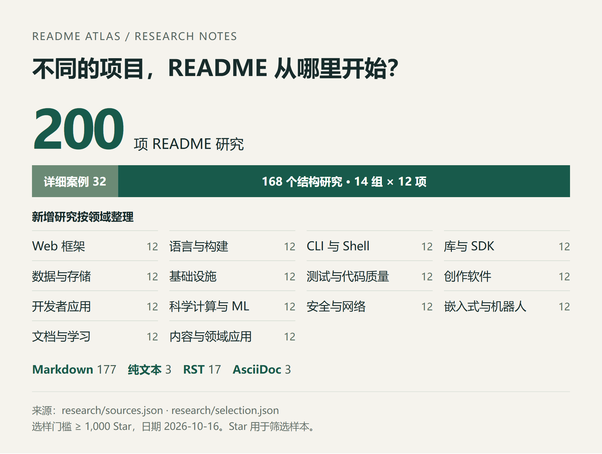
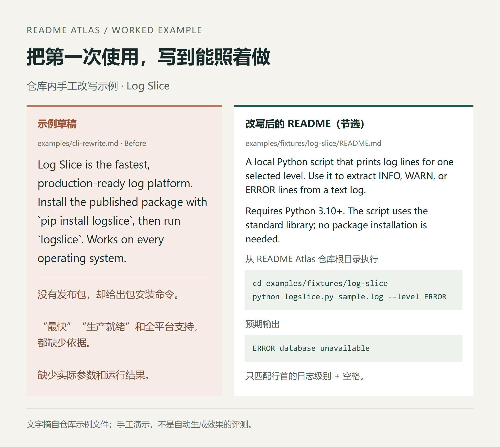
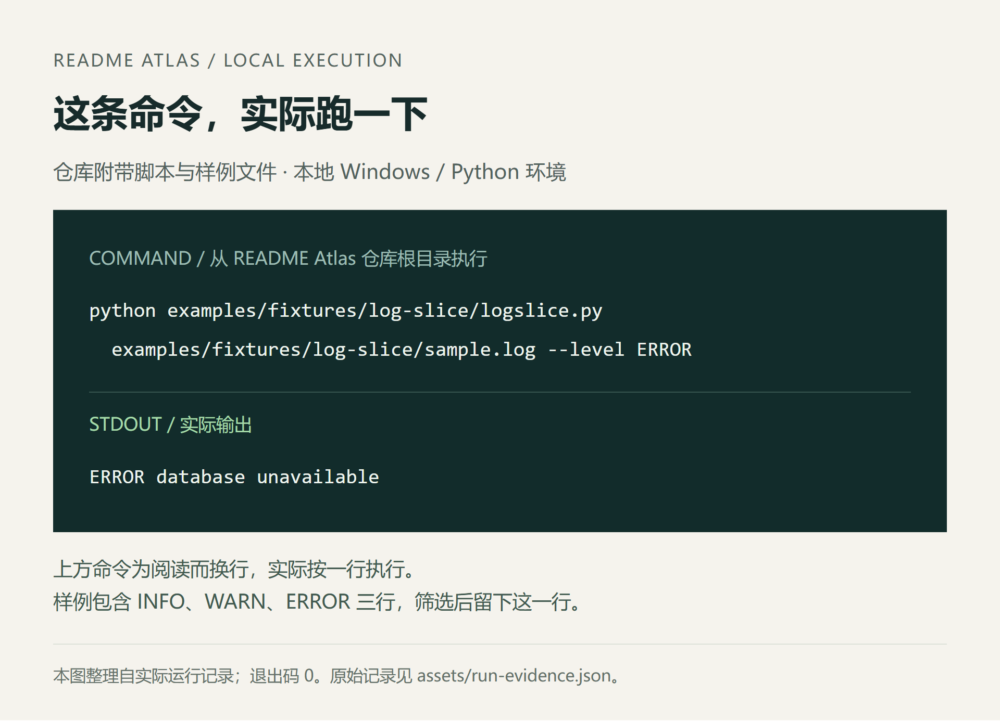

我做了个写 README 的 Skill，参考了 200 个项目
写完代码，再给项目补个 README。看起来不难，真写起来却有不少琐碎的地方。
开头怎么介绍，安装步骤写到哪一步，要不要放截图，徽章怎么摆。让 AI 写一版，常见的结果是章节一个不少，读完还是不知道怎么开始；换个项目，连小标题都差不多。
我想把这些事情整理一下，于是做了 README Atlas，一个给 AI 编程助手用的开源 Skill。它负责写、改、审查和翻译 README，也管排版。现在一条 npx skills add chromoany/readme-atlas 就能装进 Claude Code、Codex、Cursor 等 70 多个 agent。
从 16 个项目，一直整理到了 200 个
最初参考的是 React、Vite、FastAPI、uv、fzf 这些熟悉的项目。后来加入 Linux、PostgreSQL、Godot、Zephyr、科技爱好者周刊，差别一下就多了起来。
Linux 的读者可能要找开发入口，Godot 的用户可能只想下载编辑器，周刊的读者则想先看最新一期。照着同一份“简介—安装—使用—贡献”往下填，总有地方别扭。
现在研究集已经扩到 200 项。原有 32 个详细案例保留下来，新增的 168 项按 14 个领域整理，每组 12 项。选样时要求仓库至少有 1,000 Star，具体数量和核验日期也记在了文件里。

研究集概览。数据来自当前仓库的研究清单与筛选记录，核验日期为 2026-10-16。
每个案例都写三件事：README 实际怎么组织，哪些做法可以借鉴，照搬时要留意什么。原文固定到具体提交，可以沿着链接回去看。
比如 FastAPI，值得学的是把安装、文件、运行命令和结果串起来。Supabase 要先讲清楚不同部署方式。科技爱好者周刊把最新一期和历史归档放在重要位置，就很符合读者的来意。
这些观察最后会用到 Skill 里：先看当前项目的读者要做什么，再决定从哪里开始写。参考资料按领域拆开，需要哪一组就读哪一组。
我比较在意那些“复制之后就卡住”的地方
第一次用一个项目，复制安装命令就报错，确实挺扫兴的。
仓库里有个很小的演示：一个筛选日志的 Python 脚本。示例故意准备了一段有问题的介绍，把它说成“最快、生产就绪的日志平台”，还写了 pip install logslice。
但目录里只有本地脚本，没有发布包，也没有性能测试。
改写后的介绍就实在多了：这是个本地脚本，需要 Python 3.10+，不必装额外的包。命令怎么写、跑完有什么输出，也一并给出来。

仓库内的手工改写示例。左侧摘自故意写错的草稿，右侧摘自改写后的 README。
这个例子很小，恰好能说明我想解决的问题。用户要筛一行日志，给他脚本路径、参数和输出就够了。还应该补一句：它要求日志级别出现在行首，前面带时间戳的行不会直接匹配。

在本地运行仓库附带的脚本与样例文件，图中保留了实际命令和输出。
README Atlas 会要求 AI 先检查配置、入口、示例、测试和文档。写完后，再核对命令、链接和首次使用步骤；条件允许时，实际运行那条路径。没执行的部分就说明没执行。
排版也一起管
我希望它写出来的 README 看着舒服。该有的截图、清楚的层级、适当的留白，都值得花点心思。
仓库的视觉指南目前整理了 13 个项目。Vite 的品牌首屏、fzf 的终端展示、Godot 的编辑器预览、Prometheus 的架构图，各自解决的问题都挺具体。
落到自己的项目上，一个桌面软件可以先让人看到界面；一个交互式工具，展示一次操作往往很直观；一个小脚本，标题、说明和代码块排清楚就够用了。
徽章的摆法，我也加了一条明确约定：集中放在顶部同一块区域，徽章及其上方的标题、Logo、标语、语言入口居中，正文左对齐。版本、下载量、社区收录这些徽章都放在同一组，别散在页面各处。
另外，这次扩展也碰到了 RST、AsciiDoc 和纯文本 README。Skill 里补了保留原格式、查找包级 README、跟随路径指针等处理要求。项目原本用什么格式，就先按它的方式来。
拿自己的仓库试一下
装起来一行命令：
npx skills add chromoany/readme-atlas
它会装进本机检测到的 agent，只给某个仓库用就进那个仓库目录再执行。不想用命令行也行，把 skills/readme-atlas 整个文件夹复制到技能目录同样可以，Windows、macOS 和 Linux 的复制命令都在中文 README 里。
Skill 本身是 Markdown 指令和参考资料，不需要另装 Python 包，也不用为它配置专用 API Key。
然后在 Claude Code 或 Codex 中打开要处理的项目，发一句：
使用 $readme-atlas，为当前仓库写一份中文 README。
写给第一次用这个项目的人。
把安装、第一次使用和预期结果写清楚，顺便整理排版。
所有功能和命令都以仓库实际内容为准。
已有 README，也可以只改一部分：
使用 $readme-atlas 改进现有 README。
保留准确内容，补全首次运行步骤，整理首屏和徽章。
或者先查问题：
使用 $readme-atlas 审查 README.md，先不改文件。
看看新用户照着做会卡在哪里，给出依据和修改建议。
仓库里有研究索引、视觉指南和改写示例，想看具体写法可以直接翻。那个日志案例是手工演示，Skill 的实际效果也欢迎大家拿自己的项目来试。
项目采用 MIT 许可证。觉得有用可以点个 Star，遇到写错命令、介绍不清楚或排版不合适的情况，也欢迎附上具体例子提 Issue。